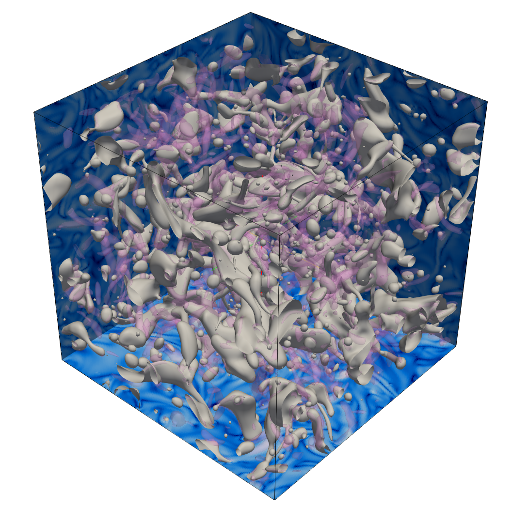

A MULTIPHASE FLOW RESEARCH RESOURCE
Complex flows.
Shared discovery.
A high-fidelity, multi-regime database for understanding the interaction of turbulence, deformable interfaces, and fluid properties.
DIRECT NUMERICAL SIMULATION3D FIELDSHDF5 FORMAT
01 / INTERFACIAL DYNAMICS

Stationary isotropic turbulenceHigh Weber number regime ↗
04Canonical simulation families
55–220Reλ in the HIT collection
128³–1024³HIT grid resolutions
u, v, w, p, ϕVelocity, pressure & phase indicator
EXPLORE MFLOWDB